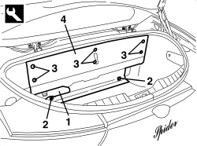

7040B20 BACK TRIM FOR LUGGAGE COMPARTMENT/LOAD PLATFORM - ARRANGE
- Path
- Procedures > 70 FITTINGS > 7040 BODY INTERIOR FITTINGS AND TRIM > 7040B LUGGAGE COMPARTMENT AND LOAD PLATFORM TRIMS > 7040B20 BACK TRIM FOR LUGGAGE COMPARTMENT/LOAD PLATFORM - ARRANGE
- Kind
- repair procedure (removal / refitting; the operation number is the code)
- Applies to
- engines: 2.2 JTS, 3.2 JTS; all production periods; only with equipment: Spider
- Interactive page
- https://sloeber94.github.io/elrnDB-aBrrSpdr/en/#/946004118
Applies to: engines: 2.2 JTS, 3.2 JTS; all production periods; only with equipment: Spider
 Removing
Removing
 Refitting
Refitting- Open the boot lid.
1. Remove the trim.
2. Undo the bolts and remove the mounting seals.
3. Release the retaining buttons using the special tool.
Tool | Description | Function | Validity |
|---|---|---|---|
1823015000 | Knife | Retainer removal |
4. Remove the rear trim.

Applies to: engines: 2.2 JTS, 3.2 JTS; all production periods; only with equipment: Spider
Refitting
Removing- Check that the rear trim is not damaged.
- Position the rear trim.
- Attach the retaining buttons.
- Position the mounting seals and tighten the bolts.
- Position the trim.
- Close the boot lid.
Topics that link to this page (8)
- 5010C60 LH OR RH REAR AIR OUTLET VENT (ONE) - R.R
- 5570T27 AERIAL SUPPORT - R.R
- 5570T85 CD/AUDIO PLAYER/LOADER - R.R.
- 5580T42 BOSE SOUND SYSTEM AMPLIFIER - R.R.
- 7025B34 BOOT LID EMERGENCY OPENING CONTROL - R.R.
- 7030H30 END OF TRAVEL BUFFER BRACKET FOR HOOD FIFTH ARC - R.R.
- 7040B18 LOAD COMPARTMENT LOAD PLATFORM SIDE TRIM ONE LH OR RH - R.R
- 7095E35 REAR WING SOUND INSULATION PANEL (ONE), LEFT OR RIGHT - R.R.